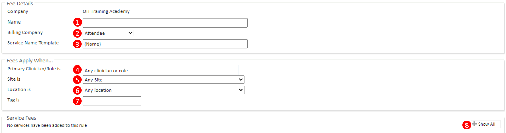
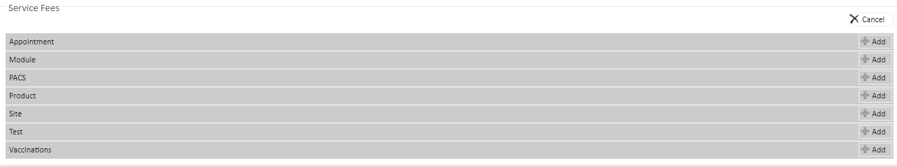
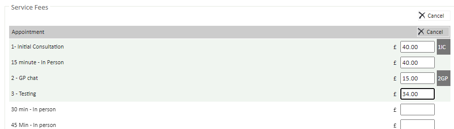
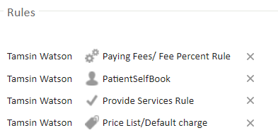
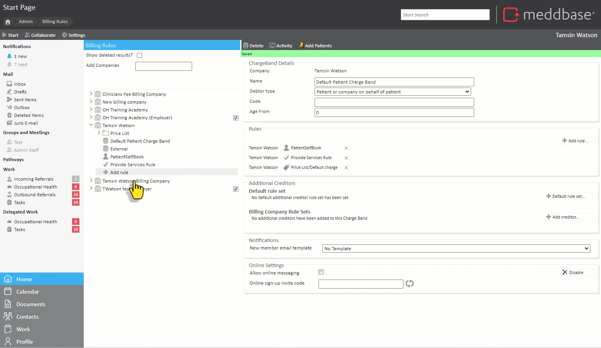

A clinician, site, or company may charge the internal Creditor Company a fixed fee for performing a specific service, irrespective of the invoice total. The Fee Rule enables this fixed fee allocation.
For example, you may pay clinicians £100 for delivering the appointment, so you have a Fee rule which is at a set amount of £100. When a patient books in with the clinician, two invoices are generated. One is for the appointment and services which the patient’s Preferred Payer pays, and the other invoice is what the chamber is to pay to the Clinician based on the fixed fee.
In this way, the chamber is both the creditor and debtor for the appointment.
*This is similar to the Fee Percent Rule, however, instead of the clinician charging a % of the invoice total, they will charge a set numerical value.
This article will explain the features of a Fee Rule, how to configure and apply the Fee Rule and enable Invoice Grouping By Time.
To begin the process of configuring the Fee rule. Go to Admin > Billing rules:

1. Name - Set the name of the fee rule. If this is left empty, the default name will be "Fee Rule".
2. Billing Company - Set the billing company to either the attendee of the appointment (individual clinician), or to a specific company.
*If you have set the Fee Rule's Billing Company to "Attendees", you must ensure the Attending Clinician's billing company is set to the correct Company you created. This is possible in the Clinician's Personal Details.
3. Service Name Template - The name of the service on the secondary invoice, the default {Name} will use the service as it appears on the primary invoice.
Fees Apply when:
4. Primary Clinician/Role - Assign a clinician or role group for the rule to apply to.
5. Site - Assign a site for the rule to apply to.
6. Location - Assign a location for the rule to apply to.
7. Tag - Assign a tag for the rule to apply to.
Service Fees:
Service Fees is where you set the Fee value amount for a specific service. To set the Service Fees:
1. Click +Add
2. Enter a numerical value to the services you need.
This billing rule will automatically save.
Your chamber may have alternative services and therefore may not have the same shown in the image below.


Once you have created your Fee rule, you must add it to the appropriate Charge band.
The order of the rules on the charge band is important, so it is best practice to put the Fee Rule above any Price Lists.

The video below (approximately 46 seconds) guides you through the process of adding a Fee Rule, configuring the settings and then applying to the Chamber's Charge Band.

You will likely want to group these Fee Rule invoices on a monthly basis. This will mean that every time a fee invoice is generated, it will be added to the most recent unsent invoice where it will remain until the end of the month. This is set up inside of the Company record.
To set up Grouping of Invoices by Time for the set Fee Rule , you will need to do the following:
When setting invoice grouping by time, you do not usually have to set the Company Type to "Internal", this is only needed when using the Fee Rule and grouping associated invoices.